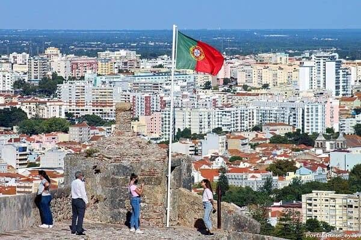
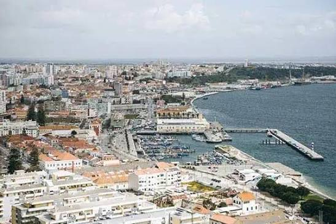
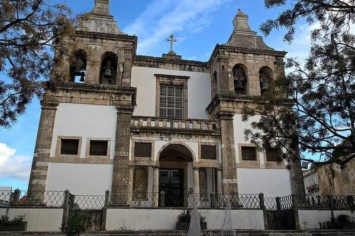
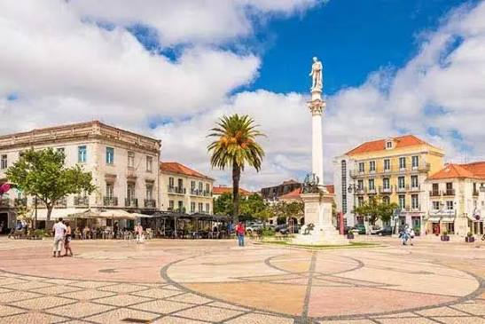

Multimédia
Nesta página encontra conteúdos multimédia.
Fotografias | Vídeo | Poema
Fotografias






Vídeo
Poesia
Setúbal, cidade bela,
Entre a serra e o mar azul,
És de Portugal a estrela,
A brilhar mais a sul.
Multimédia
Galeria de fotografias e vídeos de Setúbal e da Arrábida.